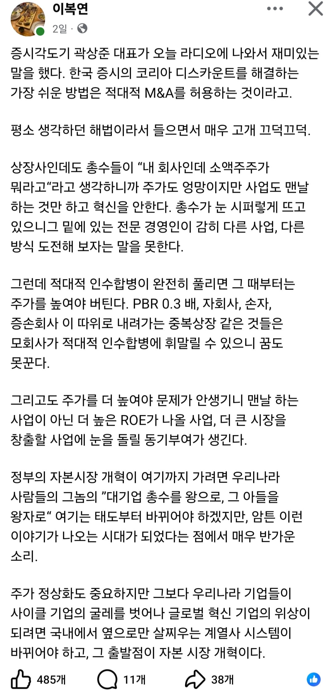

📈 한국 증시의 코리아 디스카운트를 해결하는 가장 쉬운 방법은 적대적 M&A를 허용하는 것이다
댓글
고려아연 사태 때 느꼈다.
재벌은 법 위에 있다. 진짜 어이가 없더라. 경영권에 지분은 중요치 않다니.
다 필요없다.
상법개정 빨리 하고
상하한가, 투자주의 투자경고 이런 저능아 같은 시스템만 없애도 코스피 1만 즉시 간다
다른나라들은 그런 시스템 없음?
기업이 원하지 않음, 정부가 원하지 않음, 국민도 아마 절반은 원하지 않음
주식 투자자랑 금융 자본만 원하는거임. 실제로 사회에 긍정적인 영향을 주는지는 별개로
우리나라는 지금 상황상 기득권과 권력자들이 "지금까지 잘 해왔는데 이대로만 갑시다"마인드가 너무 강해서 못이김
그게 문제라는 얘기가 20년전부터 나왔는데 지금 한바퀴 돌아서 진짜로 하던대로 하던 것들이 잘되고 있는 정점에 와있으니 귓등으로도 안 들릴걸
현답ㅋㅋ
해외자본을 막을방법이없어. 중국만 하겠냐고 ㅋㅋ
중국 연기금 2개의 운용자본 총합 1400조
지금 SK하이닉스 시가총액 920조
어쨌든 가능한거 아니냐고? 연기금들이 지금 들고있는 현금이 1400조인게 아님 다른걸로 사서 들고있는데 그거 다던져야됨 ㅇㅇ
시총 900조는 작은게 아님 운용자산 2천조짜리 중국 국부펀드가 움직여도 그정도 현금은 단시간에 못구함
그리고 하이닉스 주가가 300만원 근접했을때 시총은 약 2천조고 그정도면 중국 운용자산 1위인 중국공상은행이 계열사 포함 운용자산 총합이 1경 1600조인데 그 5분의 1
하이닉스 PER가 20간다? 그럼 절반이고
적대적 M&A허용!
국민연금: 어…? 지금요…?
정부 입장에서도 기업이 진짜 주주, 국민 것이 되는 것 보다 재벌 것으로 남아 있는게 좋음. 호남산단 봐라 진짜 주주들 이익을 위했으면 경영진이 정부에서 시킨다고 했을까?
근데 이제 재벌들도 재벌3세까지 내려와서 4세부터는 사실상 승계불가능임
진짜 주주들 이익을 위해서면 노동자들은 가능한 전부 해고해야지
그럼 일자리는?
주주환원만 제대로 해도 지금보다 더 오름
기업이 돈 벌면 임원들 주머니로 다 들어가는데 임원들 주가 떨어지든 말든 관심도 없음
그걸 할 계기가 없다는 얘기임 본문은
주주환원이고 나발이고 안해도 아무런 문제가 없으니까
???: 박현준! 한국 증시 해결해!
대기업은 절대 선이여야하고 재벌가는 무조건 옳다고 생각하시는 분들 때문에 안됨
해법은 괜찮은데 언제나 악용하지
물적분할도 그래 그게 유리하니까 그러는거잖아
피해는 주주들만 보고
작은자본이라도 그만큼은 확실히 대우해야하는게 자본주의인데 이리저리 존나빠져나갈거 뻔함
일단해보고 보완하는거보다 생각을 더 해야지
아이디어는 좋은데 준비해야 할 것들이 많아보임~
저것도 하고 분할상장한거 도로 합치면 됨
카카오 삼성 sk 같은놈
같은 회사을 몇개로 쪼개는 거임
그 합치는걸 유도하는게 외부 공격 허용임
계열사 뺏기기 싫으면 자진상장폐지하고 지주회사만 남겨서 시총 최대한 올려놔야 외부에서 못삼
그러면 더더욱 해야겠네
근데 PBR 0.3이고 회장이 지네 돈마냥 회사 굴리는 중견기업들은 대주주 지분율이 50% 넘기 때문에 50%+알파 지분 인수가 어려워 적대적M&A가 불가능함 그리고 대기업들은 ETF가 많이 가지고 있는데 ETF가 보유한 주식은 의결권이 없기 때문에 답이 없음
ETF가 보유한 주식이 의결권이 없다는건 어디서 그러는거임? 대한민국에서 의결권이 없는 주식은 우선주 뿐일텐데?
etf 보유 주식도 의결권 있어... 그냥 총체적으로 오너 아니면 법으로 보호를 못받아서 그래 씹판사새끼들이 현 주가가 50만원인데 5만원에 가치평가 해서 오너 지분 늘리고 줄이고 지랄해도 ㅇㅋ 하는데 뭐 어쩌겠음
법으로 금지를 안하는데 판사가 뭐 어떻게함?
맞네. 나도 글 읽으면서 그럼 대기업이 다 먹어버리는것아닌지 생각햇는데